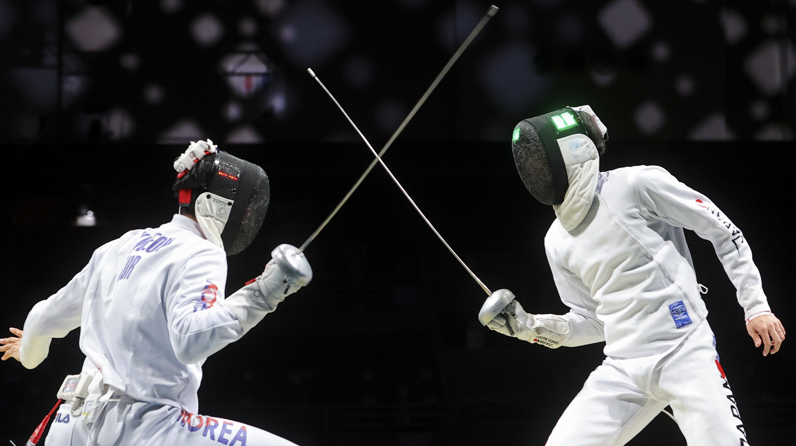

General Structure

A fencing match is known as a bout. A typical bout lasts for 3 intervals of 3 minutes each. Between each interval fencers take a 1 minute break. Fencers score points by landing an attack on their opponent. The first to 15 points, or fencer with more points once 9 minutes of fencing are up is declared the winner!
If the scores are tied when the time runs out, the referee randomly selects one fencer to have priority. The fencers continue fencing for 1 minute. The fencer that scores a point is declared the winner. If neither fencer scores a point, the fencer with priority is the winner.
The Playing Area
A fencing bout takes place on a strip, or piste, which should be 14 meters long and 1.5 meters wide. There are two en-garde lines (where fencers stand at the beginning of the bout) two meters from the midpoint. There are also two warning lines two meters from either end of the strip, to let a retreating fencer know that they are nearly out of space. Retreating off the piste is a score for the opponent.
Protocol of a bout
At a start of a bout, the fencers walk towards the centre line and test their electonic equipment. Then they retreat to the en garde lines. Before the start of the bout, the fencers must salute each other and the referee. This practice likely originated from the present arms military drill, harkening back to the military origins of fencing.
Judging is often done in French. Once the fencers are at their positions, the referre will call "En garde!" (on-guard) to signal to he fencers to put on their masks and adopt a fencing stance. Then they will call "Prêtes?" (ready?). Finally upon the call "Allez!" (go!), the fencers will begin their bout.
Priority (Right of Way)
Foil and Sabre fencing have an additional component called priority rules. When both fencers hit more or less simultaneously, the rules of priority are applied to determine which fencer gets the point. This is determined by which fencer first initiated a correcly executed attack.
These rules were adopted in the 18th century as part of teaching practice. It encourages fencers to make sensible decisions and reward initiative and circumspection. It discourges blindly charging into the opponent without a thought out plan of attack. In a fencing bout, the priority passes smoothly from one fencer to another, and back again, and so on. This is illustrated in the clip below, where the arrow shows which fencer has priority
Penalties
Like all sport, fencing also has a set of penalty cards or flags. The cards and their explanation is as follows
| Penalty |
Action |
| Yellow Card |
Fencer is warned, but no other action taken |
| Red Card |
Fencer is warned and point awarded to their opponent |
| Black Card |
Fencer is excluded from the competition and may be exprelled from the tournment |
Fencing penalty cards
The penalties are given out for offences comitted during the bout or during the course of the competition. Some examples of offences are shown.
| Category |
Offence |
Penalty |
| Group 1 |
- Making bodily contact with the opposing fencer
- Delaying the bout
- Removing equipment
|
For first offence, fencer is warned with yellow card. For subsequent offences, fencer is penalized with red card |
| Group 2 |
- Violent or vindicative actions
- Failure to report to piste with proper equipment
|
All Group 2 offences are penalized with a red card |
| Group 3 |
- Disturbing the order of a bout
- Intentionally falsifying inspection marks on equipment
|
For first offence, fencer is penalized with a red card. For any subsequent offence, fencer may be penalized with a black card |
| Group 4 |
- Doping
- Cheating
- Refusal to salute
|
Automatically penalized with a black card |
Fencing Offences